Pasporty slovenských měst: bez pasportu (nahoře, modře) a s pasportem (dole, červeně)
Řez zleva (A) doprava (B), ±10 m podél ulice, 10 px = 1 m. Silné čáry = okraje vozovky, tenké = ostatní hranice, žlutá = střed řezu, * = odhad. Ortofoto © GKÚ Bratislava, NLC (ZBGIS, CC BY 4.0).
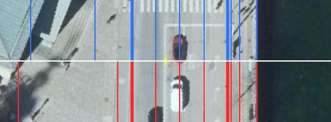
dkk-ko3 · Børsgade (kobenhavn)
bez pasportu: plocha 10.47* · chodnik 6* · pruh 3.9 · pruh 3.9 · bus 4.07 · pruh 3.73 · chodnik 0.69* · stromorad 1.31 · plocha 2.8*
s pasportem: zelen 16.2* · chodnik 2.25* · pruh 3.9 · pruh 3.9 · bus 4.07 · pruh 3.73 · chodnik 0.69* · stromorad 1.31 · plocha 2.8*
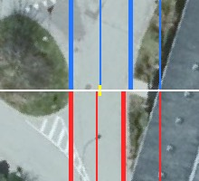
dkk-ko12 · Henrik Gerners Plads (kobenhavn)
bez pasportu: pruh 3.3 · pruh 3.3 · plocha 3.3*
s pasportem: pruh 2.9 · pruh 2.9 · plocha 4.1*
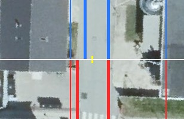
dkk-ko18 · (bez názvu) (kobenhavn)
bez pasportu: plocha 2.4* · obsluzna 3.9* · plocha 9.7*
s pasportem: plocha 1.1* · obsluzna 5.2* · plocha 9.7*
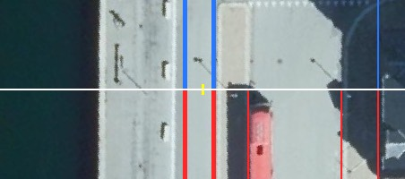
dkk-ko21 · Orlogsværftvej (kobenhavn)
bez pasportu: obsluzna 3.2* · plocha 18.4*
s pasportem: obsluzna 3.2* · chodnik 3.95* · plocha 10.35* · chodnik 4.1*
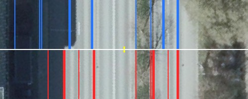
dkk-ko32 · Tagensvej (kobenhavn)
bez pasportu: plocha 4.97* · chodnik 0.4* · plocha 5.6* · pruh 4.5 · zelen 8.89* · stromorad 3* · zelen 2.51* · pruh 2.9
s pasportem: chodnik 3.15* · pruh 3.07 · pruh 2.93 · zelen 8.49* · stromorad 3* · zelen 0.51* · pruh 3.07 · krajnice 1.83
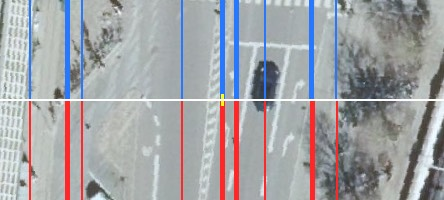
dkk-ko41 · Vester Farimagsgade (kobenhavn)
bez pasportu: chodnik 3.65* · cyklopruh 1.5 · krajnice 10* · pruh 4 · delici 1.4* · pruh 2.94 · pruh 4.56 · chodnik 2.5*
s pasportem: chodnik 3.65* · cyklopruh 1.5 · krajnice 10* · pruh 4 · delici 1.4* · pruh 2.93 · pruh 4.66 · chodnik 2.5*
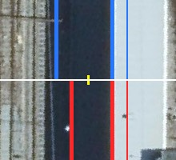
dkk-ko42 · (bez názvu) (kobenhavn)
bez pasportu: obsluzna 7* · plocha 1.9*
s pasportem: obsluzna 5.1* · plocha 1.9*
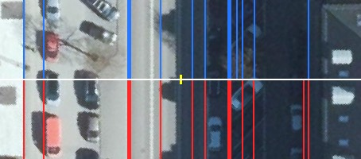
dkk-ko49 · Blegdamsvej (kobenhavn)
bez pasportu: chodnik 2.5* · plocha 10.65* · pruh 4 · pruh 4 · krajnice 1.65* · parkovani 2.95 · zelen 1* · plocha 0.71* · stromorad 1.5 · plocha 6.84*
s pasportem: chodnik 2.5* · plocha 10.65* · pruh 4 · pruh 4 · krajnice 1.65* · parkovani 2.95 · chodnik 1.71* · stromorad 1.44 · plocha 6.3* · chodnik 0.6*
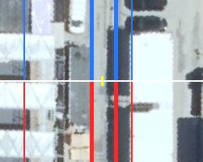
dkk-ko53 · Staldgade (kobenhavn)
bez pasportu: plocha 8.25* · obsluzna 3* · zelen 2*
s pasportem: chodnik 8.25* · obsluzna 3* · zelen 2*
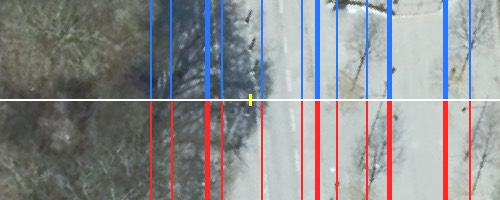
dkk-ko54 · Øster Allé (kobenhavn)
bez pasportu: chodnik 2* · zelen 3.55* · krajnice 1.5* · pruh 4 · pruh 4 · krajnice 1.5* · zelen 2.02* · stromorad 3* · zelen 2.18* · obsluzna 5.6* · stromorad 2.53*
s pasportem: chodnik 2.1* · zelen 3.45* · krajnice 1.5* · pruh 4 · pruh 4 · krajnice 1.5* · zelen 2.02* · stromorad 3* · zelen 2.18* · obsluzna 5.6* · stromorad 2.53*
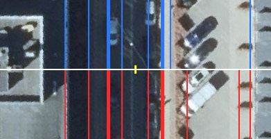
dkk-ko63 · Klerkegade (kobenhavn)
bez pasportu: zelen 3.45* · chodnik 2.8* · parkovani 2* · pruh 3.8 · parkovani 2* · chodnik 1.2* · plocha 11.45*
s pasportem: zelen 3.45* · chodnik 2.8* · parkovani 2* · pruh 3.8 · parkovani 2* · chodnik 3.6* · plocha 7.45* · chodnik 1.6*
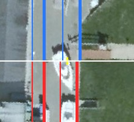
dkk-ko68 · A.H. Vedels Plads (kobenhavn)
bez pasportu: plocha 1.9* · pruh 3.07 · pruh 2.83
s pasportem: plocha 1.9* · pruh 2.7 · pruh 2.7